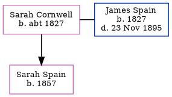

Sarah Spain (née Cornwell) c1827 -
[ Home ] | [ Calendar ] | [ Surnames Index ] | [ Errors ] | [ Family History ]Sarah Cornwell, the wife of James Spain (the three times great-uncle of Nigel Horne), was born in Wickhambreaux, Kent, England c. 18271,2,3,4,5 and married James (a wholesale fruiterer with whom she had 1 child, Sarah Ann) at St Mildred's Church, Canterbury, Kent, England on 18 Jan 18536.
During her life, she was living in Canterbury in 18611 and in 18712; at St Mary Bredin's Church, Cossington Street in Canterbury on 2 Apr 18719; in Canterbury in 18813; at Old Dover Road in Canterbury on 3 Apr 18818; in Canterbury in 18914; at Old Dover Road in Canterbury on 5 Apr 18917; and in Canterbury in 19015.
Children
- Sarah Ann was born in 1857
Citations
- 1861 England Census Online publication - Provo, UT, USA: The Generations Network, Inc., 2005.Original data - Census Returns of England and Wales, 1861. Kew, Surrey, England: The National Archives of the UK (TNA): Public Record Office (PRO), 1861. Data imaged from the National
- 1871 England Census Online publication - Provo, UT, USA: The Generations Network, Inc., 2004.Original data - Census Returns of England and Wales, 1871. Kew, Surrey, England: The National Archives of the UK (TNA): Public Record Office (PRO), 1871. Data imaged from the National
- 1881 England Census Online publication - Provo, UT, USA: The Generations Network, Inc., 2004. 1881 British Isles Census Index provided by The Church of Jesus Christ of Latter-day Saints © Copyright 1999 Intellectual Reserve, Inc. All rights reserved. All use is subject to the
- 1891 England Census Online publication - Provo, UT, USA: The Generations Network, Inc., 2005.Original data - Census Returns of England and Wales, 1891. Kew, Surrey, England: The National Archives of the UK (TNA): Public Record Office (PRO), 1891. Data imaged from The National
- 1901 England Census Online publication - Provo, UT, USA: The Generations Network, Inc., 2005.Original data - Census Returns of England and Wales, 1901. Kew, Surrey, England: The National Archives of the UK (TNA): Public Record Office (PRO), 1901. Data imaged from the National
- England & Wales Marriages 1837-2005 - Findmypast
- 1891 England, Wales & Scotland Census - Findmypast (was age 64 and the wife of the head of the household)
- 1881 England, Wales & Scotland Census - Findmypast (was age 54 and the wife of the head of the household)
- 1871 England, Wales & Scotland Census - Findmypast (was age 44 and the wife of the head of the household)
Family Tree
Map
Generated by ged2site. Last updated on Jul 3, 2024
Known Issues
Apr 2, 1871: not living at same address as spouse James Spain ('St Mary Bredin's Church, Cossington Street, Canterbury, Kent, England'/'Cossington Street, Canterbury, Kent, England')
Apr 3, 1881: not living at same address as spouse James Spain ('Old Dover Road, Canterbury, Kent, England'/'32 Old Dover Road, Canterbury, Kent, England')
James Spain residence is same location probably should be recorded as the same address (' 32 Old Dover Road, Canterbury, Kent, England'/' Old Dover Road, Canterbury, Kent, England') in 1881